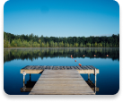

<ion-header no-border>
  <ion-toolbar>
    <ion-buttons left>
      <button ion-button icon-only>
        <ion-icon name="md-arrow-back"></ion-icon>
      </button>
    </ion-buttons>

    <ion-title text-center></ion-title>

    <ion-buttons end>
      <button ion-button icon-only>
        <ion-icon name="ios-more"></ion-icon>
      </button>
    </ion-buttons>

  </ion-toolbar>
</ion-header>

<ion-content padding text-center>
  

  <p class="songName">Dock Days</p>
  <p class="album">Fisher man</p>

  <ion-grid>
    <ion-row align-items-center id="media-controls">
      <ion-col></ion-col>
      <ion-col col-5 id="combined">
        <button class="combinedImg" icon-only ion-button>
          <ion-icon color="light" name="skip-backward"> </ion-icon>
        </button>
        <button class="combinedImg" icon-only ion-button>
          <ion-icon color="light" name="md-arrow-dropright-circle"></ion-icon>
        </button>
        <button class="combinedImg" icon-only ion-button>
          <ion-icon color="light" name="skip-forward"></ion-icon>
        </button>
      </ion-col>

      <ion-col text-left>
        <button class="shuffle" icon-only ion-button>
          <ion-icon color="light" name="md-repeat"></ion-icon>
        </button>
      </ion-col>
    </ion-row>
  </ion-grid>

  <span class="musicTime1">6:22</span>
  <span class="musicTime2">4:13</span>
</ion-content>

<ion-footer text-center>
  <ion-toolbar padding>
    <ion-range min="0" color="light" [max]="210" (ionFocus)="onSeekStart()" (ionBlur)="onSeekEnd($event)"
      name="seekbar">
    </ion-range>
    <br>
    <p class="footerInfo">Check out these other tracks!</p>
    <br>
    <ion-grid>
      <ion-row align-items-center id="media-controls">
        <ion-col col-5>
          <ion-card>
            
            <ion-card-content>
              <ion-card-title>
                Flower Fields
              </ion-card-title>
              <p>Mountain Men</p>
            </ion-card-content>
          </ion-card>
        </ion-col>
        <ion-col></ion-col>
      </ion-row>
    </ion-grid>
  </ion-toolbar>
</ion-footer>